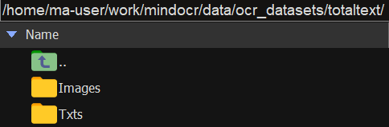
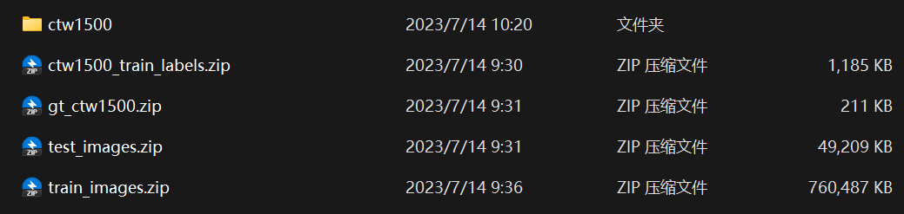
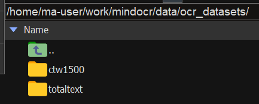
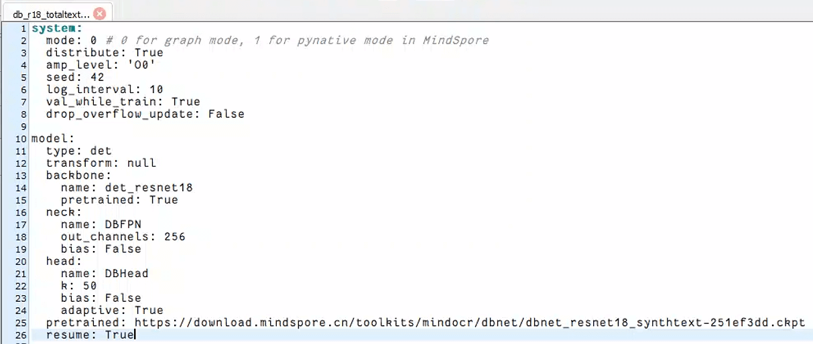
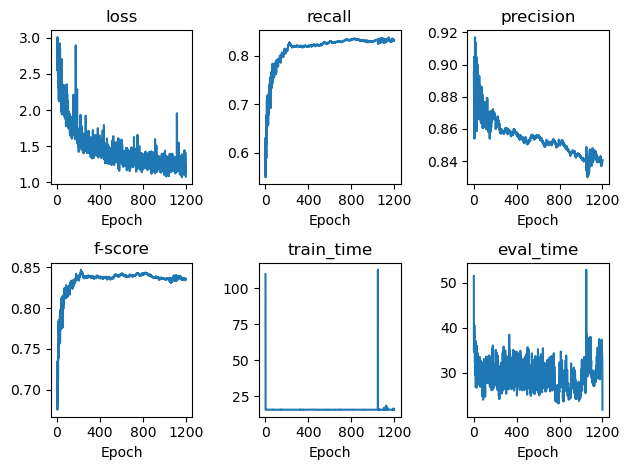
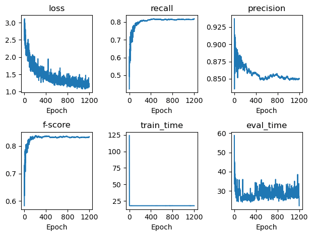
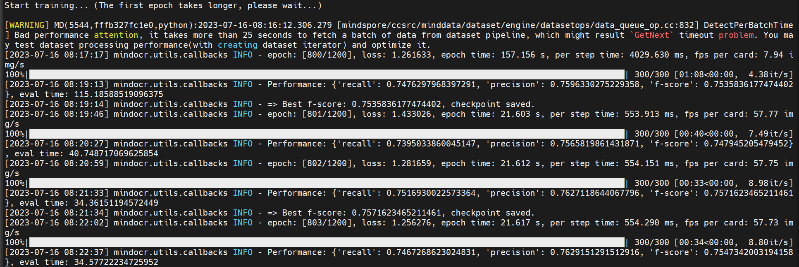

资源
-
DBNet 和 DBNet++：configs/det/dbnet/README_CN.md · MindSpore Lab/mindocr - Gitee.com
-
PSENet：configs/det/psenet/README_CN.md · MindSpore Lab/mindocr - Gitee.com
开跑
获取代码
电脑下从 mindocr: MindOCR is an open-source toolbox for OCR development and application based on MindSpore. It helps users to train and apply the best text detection and recognition models, such as DBNet/DBNet++ and CR (gitee.com) 下载得到 mindocr-main.zip，拷贝到服务器的 work/ 下。
解压。
unzip mindocr-main.zip
将会解压得到 mindocr-main 文件夹，将其改名为 mindocr。
创建环境
从智算中心里整一个 mindspore:2.0.2-alpha 的镜像，打开它。
创建虚拟环境：
source activate base
conda create -n mindocr --clone base
conda activate mindocr 检查 MindSpore 是否可用：
python -c "import mindspore;mindspore.run_check()"MindSpore version: 2.0.0a0
The result of multiplication calculation is correct, MindSpore has been installed successfully!
安装环境
由于 lanms 安装方式有点坑，先装好：
pip install lanms-neo 在 requirements.txt 里把 lanms 这行删了。
work/ 目录下：
cd mindocr
pip install -e .Successfully built mindocr
Installing collected packages: pyclipper, lmdb, xml-python, shapely, rapidfuzz, opencv-python-headless, mindocr
Successfully installed lmdb-1.4.1mindocr-0.2.0 opencv-python-headless-4.8.0.74 pyclipper-1.3.0.post4 rapidfuzz-3.1.1shapely-2.0.1 xml-python-0.4.3
转换数据集
TotalText
Windows 下，分别从 图像 (size = 441Mb) 和 标注文件 (.txt 格式) 下载 totaltext.zip 和 txt_format.zip。
解压这两个压缩包，将里面的文件组织成如下形式：
totaltext
├── Images
│ ├── Train
│ │ ├── img11.jpg
│ │ ├── img12.jpg
│ │ ├── ...(1255 个文件)
│ ├── Test
│ │ ├── img1.jpg
│ │ ├── img2.jpg
│ │ ├── ...(300 个文件)
├── Txts
│ ├── Train
│ │ ├── poly_gt_img11.txt
│ │ ├── poly_gt_img12.txt
│ │ ├── ...(1255 个文件)
│ ├── Test
│ │ ├── poly_gt_img1.txt
│ │ ├── poly_gt_img2.txt
│ │ ├── ...(300 个文件)
然后再打成压缩包 totaltext.zip，上传到服务器，解压至（unzip 命令）相应目录data/ocr_datasets/下：
{kind=link}

返回 mindocr/ 目录，开始转换数据集：
- Train
python tools/dataset_converters/convert.py \
--dataset_name totaltext \
--task det \
--image_dir ./data/ocr_datasets/totaltext/Images/Train/ \
--label_dir ./data/ocr_datasets/totaltext/Txts/Train/ \
--output_path ./data/ocr_datasets/totaltext/train_det_gt.txtWarning img1075.jpg: skipping invalid polygon [[221, 208]]
Warning img1083.jpg: skipping invalid polygon [[534, 294]]
Warning img114.jpg: skipping invalid polygon [[606, 697]]
Warning img1304.jpg: skipping invalid polygon [[718, 303]]
Warning img1474.jpg: skipping invalid polygon [[413, 792]]
Warning img1489.jpg: skipping invalid polygon [[472, 1035]]
Warning img700.jpg: skipping invalid polygon [[802, 1175]]
Warning img759.jpg: skipping invalid polygon [[5, 984]]
Warning img839.jpg: skipping invalid polygon [[491, 1052]]
Warning img949.jpg: skipping invalid polygon [[947, 324]]
Conversion complete.
Result saved in ./data/ocr_datasets/totaltext/train_det_gt.txt
- Test
python tools/dataset_converters/convert.py \
--dataset_name totaltext \
--task det \
--image_dir ./data/ocr_datasets/totaltext/Images/Test \
--label_dir ./data/ocr_datasets/totaltext/Txts/Test \
--output_path ./data/ocr_datasets/totaltext/test_det_gt.txtWarning img664.jpg: skipping invalid polygon [[5, 340]]
Conversion complete.
Result saved in ./data/ocr_datasets/totaltext/test_det_gt.txt
这样就可得到预期格式的数据集：
totaltext
├── Images
│ ├── Train
│ │ ├── img1001.jpg
│ │ ├── img1002.jpg
│ │ ├── ...
│ ├── Test
│ │ ├── img1.jpg
│ │ ├── img2.jpg
│ │ ├── ...
├── test_det_gt.txt
├── train_det_gt.txt
CTW1500
从 Yuliang-Liu/Curve-Text-Detector: This repository provides train＆test code, dataset, det.&rec. annotation, evaluation script, annotation tool, and ranking. (github.com) 下载压缩包并解压成如下形式：
{kind=link}

ctw1500
├── ctw1500_train_labels
│ ├── 0001.xml
│ ├── 0002.xml
│ ├── ...
├── gt_ctw_1500
│ ├── 0001001.txt
│ ├── 0001002.txt
│ ├── ...
├── test_images
│ ├── 1001.jpg
│ ├── 1002.jpg
│ ├── ...
├── train_images
│ ├── 0001.jpg
│ ├── 0002.jpg
│ ├── ...
将文件夹 ctw1500 重新打包成 ctw1500.zip，放到服务器中，解压出来：
{kind=link}

mindocr/ 下执行转换命令：
- Train
python tools/dataset_converters/convert.py \
--dataset_name ctw1500 \
--task det \
--image_dir ./data/ocr_datasets/ctw1500/train_images/ \
--label_dir ./data/ocr_datasets/ctw1500/ctw1500_train_labels/ \
--output_path ./data/ocr_datasets/ctw1500/train_det_gt.txt- Test
python tools/dataset_converters/convert.py \
--dataset_name ctw1500 \
--task det \
--image_dir ./data/ocr_datasets/ctw1500/test_images/ \
--label_dir ./data/ocr_datasets/ctw1500/gt_ctw1500/ \
--output_path ./data/ocr_datasets/ctw1500/test_det_gt.txt自己的数据集
将自己的数据集转换成 totaltext 的格式：
- Train
python tools/dataset_converters/convert.py \
--dataset_name totaltext \
--task det \
--image_dir ./data/ocr_datasets/blendertext/images/Train/ \
--label_dir ./data/ocr_datasets/blendertext/Txts/Train/ \
--output_path ./data/ocr_datasets/blendertext/train_det_gt.txt- Test
python tools/dataset_converters/convert.py \
--dataset_name totaltext \
--task det \
--image_dir ./data/ocr_datasets/blendertext/images/Test \
--label_dir ./data/ocr_datasets/blendertext/Txts/Test \
--output_path ./data/ocr_datasets/blendertext/test_det_gt.txt训练
db_r18_totaltext（效果没有官网说的那么好但还是能用）（7.12-7.14）
先修改 config configs/det/dbnet/db_r18_totaltext.yaml 里的数据集路径（我本来不想修改的，结果发现它默认是个绝对路径且不在 work 中，那必须改了）
将 train: dataset: 和 test: dataset: 下的 dataset_root 调整为自己的数据集路径，我这里是：
dataset_root: ./data/ocr_datasets
单卡训练（成）
单卡训练（请确保 yaml 文件中的
distribute参数为 False。（emmmm 但好像 True 也不会影响。））
# train dbnet on totaltext dataset
python tools/train.py --config configs/det/dbnet/db_r18_totaltext.yaml[2023-07-12 16:40:01] mindocr.train INFO - Standalone training. Device id: 0, specified by system.device_id in yaml config file or is default value 0.
[2023-07-12 16:40:07] mindocr.data.builder INFO - Creating dataloader (training=True) for device 0. Number of data samples: 1255
[2023-07-12 16:40:10] mindocr.data.builder INFO - Creating dataloader (training=False) for device 0. Number of data samples: 300
[2023-07-12 16:40:13] mindocr.models.backbones.mindcv_models.utils INFO - Finish loading model checkpoint from: /home/ma-user/.mindspore/models/resnet18-1e65cd21.ckpt
[2023-07-12 16:40:13] mindocr.models.utils.load_model INFO - Finish loading model checkoint from https://download.mindspore.cn/toolkits/mindocr/dbnet/dbnet_resnet18_synthtext-251ef3dd.ckpt. If no parameter fail-load warning displayed, all checkpoint params have been successfully loaded.
[2023-07-12 16:40:13] mindocr.optim.param_grouping INFO - no parameter grouping is applied.
[2023-07-12 16:40:20] mindocr.train INFO -
========================================
Distribute: False
Model: det_resnet18-DBFPN-DBHead
Total number of parameters: 12351042
Total number of trainable parameters: 12340930
Data root: ./data/ocr_datasets
Optimizer: SGD
Weight decay: 0.0001
Batch size: 20
Num devices: 1
Gradient accumulation steps: 1
Global batch size: 20x1x1=20
LR: 0.007
Scheduler: polynomial_decay
Steps per epoch: 62
Num epochs: 1200
Clip gradient: False
EMA: True
AMP level: O0
Loss scaler: {'type': 'dynamic', 'loss_scale': 512, 'scale_factor': 2, 'scale_window': 1000}
Drop overflow update: False
========================================
Start training... (The first epoch takes longer, please wait...)
[2023-07-12 16:42:13] mindocr.utils.callbacks INFO - epoch: [1/1200], loss: 2.851490, epoch time: 113.039s, per step time: 1823.213ms, fps per card: 10.97 img/s
妈了个巴子，README.md 写的不清不楚的,终于能跑了。不过这个 first epoch takes longer 真的够 longer……
笑死大半夜实验室电脑寄了还让我学了怎么断点续训
训练到一半 Moba 居然还崩溃了？还得整个断点续训 orz：docs/cn/tutorials/advanced_train.md · MindSpore Lab/mindocr - Gitee.com
往 db_r18_totaltext.yaml 里的 model: 下添加：
resume: True{kind=link}

然后再：
python tools/train.py --config configs/det/dbnet/db_r18_totaltext.yaml 会提示：
Resume train from epoch: 1049
就可以继续了！
分析训练结果
最后结果：
[2023-07-14 10:27:56] mindocr.utils.callbacks INFO - => Best f-score: 0.8407643312101911
Training completed!
[2023-07-14 10:27:56] mindocr.utils.callbacks INFO - Top K checkpoints:
f-score checkpoint
0.8408 ./tmp_det/e1110.ckpt
0.8401 ./tmp_det/e1090.ckpt
0.8397 ./tmp_det/e1086.ckpt
0.8397 ./tmp_det/e1089.ckpt
0.8394 ./tmp_det/e1126.ckpt
0.8392 ./tmp_det/e1132.ckpt
0.8392 ./tmp_det/e1149.ckpt
0.8390 ./tmp_det/e1152.ckpt
0.8389 ./tmp_det/e1129.ckpt
0.8389 ./tmp_det/e1139.ckpt
从 tmp_dbt/ 中可以看到输出的结果，炼出的丹，日志信息等。
第 1110 个 epoch 的丹性能最好！
| Epoch | Loss | Recall | Precision | F-score |
|---|---|---|---|---|
| 1110 | 1.139845 | 83.43% | 84.73% | 84.08% |
emmmm 官网的最终效果为：
| 模型 | 环境配置 | 骨干网络 | 预训练数据集 | Recall | Precision | F-score | 训练时间 | 吞吐量 | 配置文件 | 模型权重下载 |
|---|---|---|---|---|---|---|---|---|---|---|
| DBNet | D910x1-MS2.0-G | ResNet-18 | SynthText | 83.66% | 87.65% | 85.61% | 12.9s/epoch | 96.9 img/s | yaml | ckpt |
写一个 python 读取 result.log 并画出图表：
import matplotlib.pyplot as plt
data = [[], [], [], [], [], []]
epochs = 0
with open('result.log', 'r') as file:
lines = file.readlines()
epochs = len(lines) - 1
for line in lines[1:]:
for i in range(1, len(line.strip().split())):
data[i-1].append(float(line.strip().split()[i]))
fig, axs = plt.subplots(nrows=2, ncols=3)
for i, ax in enumerate(axs.flat):
ax.plot(range(1, epochs + 1), data[i])
ax.set_xticks([0, epochs * 1 / 3, epochs * 2 / 3, epochs])
ax.set_title(lines[0][:-1].split('\t')[i + 1])
ax.set_xlabel('Epoch')
ax.set_ylabel('')
plt.tight_layout()
plt.show(){kind=link}

可以看到
- loss 逐渐下降
- recall 逐渐接近于 1
- precision 逐渐下降？这好吗（ChatGPT 说这是正常的）
在训练深度神经网络时，precision（精确度）和 f-score（F1 分数）是衡量分类模型性能的指标。
- 精确度（precision）是指被正确预测为正例的样本数占所有被预测为正例的样本数的比例。它衡量了模型在预测为正例时的准确性。
- F1 分数（F1-score）则是同时考虑了召回率（recall）和精确度的指标，它是精确度和召回率的调和平均值。F1 分数越接近于 1 表示模型在保持高精确度和高召回率方面表现良好。
当训练过程中，随着训练的进行，精确度下降但是 F1 分数逐渐趋近于 1 的情况是可能存在的，尤其是当模型更注重于增加召回率（即尽可能捕捉到更多的正例）时。这种情况通常发生在数据标签不平衡、类别不均衡或存在较高的假阳性或假阴性的情况下。
此时，模型可能会将更多的样本预测为正例，导致假阳性增加，从而降低了精确度。然而，由于模型的预测更加倾向于正例，它也能更好地捕捉到真正的正例，并提高召回率。因此，F1 分数可能会逐渐趋近于 1，指示模型在整体上仍然具有较好的分类性能。
需要注意的是，对于具体的问题和数据集，还需要根据具体情况进行分析和评估，以确定模型的性能是否符合预期要求。
-
f-score 逐渐接近于 1
-
一开始 train_time 就会很慢，执行到 1049 的时候重启训练耗费了好多时间 orz
原文中第 800 个 epoch 时的性能：
| Method | P | R | F |
|---|---|---|---|
| DB-ResNet-18 (800) | 88.3 | 77.9 | 82.8 |
查看 result.log 中第 800 个 epoch 时的性能：
| Method | P | R | F |
|---|---|---|---|
| DB-ResNet-18 (800) | 85.0 | 83.2 | 84.0 |
好家伙训练一个这玩意扣我 665 多块钱……
分布式训练（寄）
还得装 openmpi 4.0.3 (for distributed training/evaluation)
下载 https://download.open-mpi.org/release/open-mpi/v4.0/openmpi-4.0.3.tar.gz 拷贝到服务器中，然后一阵操作：
gunzip -c openmpi-4.0.3.tar.gz | tar xf -
cd openmpi-4.0.3
./configure --prefix=/usr/local
<...lots of output...>
make all install然后就会喜提安装失败。
找了工作人员，还没得到解决方案……
改天试试 RANK_TABLE_FILE 方法。
db_r18_ctw1500（能跑但是没有跑完）（7.14）
先修改 config configs/det/dbnet/db_r18_ctw1500.yaml 里的数据集路径：
将 train: dataset: 和 test: dataset: 下的 dataset_root 调整为自己的数据集路径：
dataset_root: ./data/ocr_datasets
开跑！
python tools/train.py --config configs/det/dbnet/db_r18_ctw1500.yaml[2023-07-14 10:57:25] mindocr.models.utils.load_model INFO - Finish loading model checkoint fro m https://download.mindspore.cn/toolkits/mindocr/dbnet/dbnet_resnet18_synthtext-251ef3dd.ckpt. If no parameter fail-load warning displayed, all checkpoint params have been successfully loade d.
[2023-07-14 10:57:25] mindocr.optim.param_grouping INFO - no parameter grouping is applied.
[2023-07-14 10:57:31] mindocr.train INFO -
========================================
Distribute: False
Model: det_resnet18-DBFPN-DBHead
Total number of parameters: 12351042
Total number of trainable parameters: 12340930
Data root: ./data/ocr_datasets
Optimizer: SGD
Weight decay: 0.0001
Batch size: 20
Num devices: 1
Gradient accumulation steps: 1
Global batch size: 20x1x1=20
LR: 0.007
Scheduler: polynomial_decay
Steps per epoch: 50
Num epochs: 1200
Clip gradient: False
EMA: False
AMP level: O0
Loss scaler: {'type': 'dynamic', 'loss_scale': 512, 'scale_factor': 2, 'scale_window': 1000}
Drop overflow update: False
========================================
Start training... (The first epoch takes longer, please wait...)
[WARNING] MD(9900,fffb197fa1e0,python):2023-07-14-10:58:45.969.430 [mindspore/ccsrc/minddata/da taset/engine/datasetops/data_queue_op.cc:832] DetectPerBatchTime] Bad performance attention, it takes more than 25 seconds to fetch a batch of data from dataset pipeline, which might result `GetNext` timeout problem. You may test dataset processing performance(with creating dataset it erator) and optimize it.
[2023-07-14 10:59:43] mindocr.utils.callbacks INFO - epoch: [1/1200], loss: 2.689226, epoch tim e: 132.242 s, per step time: 2644.840 ms, fps per card: 7.56 img/s
100%|████████████████████████████████████████████████████████| 500/500 [00:59<00:00, 8.42it/s]
[2023-07-14 11:00:43] mindocr.utils.callbacks INFO - Performance: {'recall': 0.8184523809523809 , 'precision': 0.8520526723470179, 'f-score': 0.8349146110056926}, eval time: 59.41374802589416 5
[2023-07-14 11:00:43] mindocr.utils.callbacks INFO - => Best f-score: 0.8349146110056926, check point saved.
可是我想整个服务器后台执行，避免之前实验室电脑 Moba 大半夜掉线的尴尬：
nohup python tools/train.py --config configs/det/dbnet/db_r18_ctw1500.yaml > test_db_r18_ctw1500.log 2>&1 &
最后一个“&”表示后台运行程序
“nohup” 表示程序不被挂起
“python”表示执行 python 代码
“-u”表示不启用缓存，实时输出打印信息到日志文件（如果不加 -u，则会导致日志文件不会实时刷新代码中的 print 函数的信息）
“test.py”表示 python 的源代码文件（根据自己的文件修改）
“test.log”表示输出的日志文件（自己修改，名字自定）
“>”表示将打印信息重定向到日志文件
“2>&1”表示将标准错误输出转变化标准输出，可以将错误信息也输出到日志文件中（0-> stdin, 1->stdout, 2->stderr）
最牛逼的伟哥提示道：
不过这种方法 你想中途终止的话 你只能用 kill 杀掉进程来解决了
不然只能等到运行结束
那么直接重启服务器也是可以的。
8.2 重跑！
db++_r18_totaltext（魔改）（7.16）
原仓库没有这个选项，试试直接给 db_r18_totaltext.yaml 里填上
use_asf: True # Adaptive Scale Fusion
channel_attention: True # Use channel attention in ASF开跑！
nohup python tools/train.py --config configs/det/test_dbnet/db++_r18_totaltext.yaml > test_db++_r18_totaltext.log 2>&1 &分析下结果：
import matplotlib.pyplot as plt
data = [[], [], [], [], [], []]
epochs = 0
with open('result.log', 'r') as file:
lines = file.readlines()
epochs = len(lines) - 1
for line in lines[1:]:
for i in range(1, len(line.strip().split())):
data[i-1].append(float(line.strip().split()[i]))
fig, axs = plt.subplots(nrows=2, ncols=3)
for i, ax in enumerate(axs.flat):
ax.plot(range(1, epochs + 1), data[i])
ax.set_xticks([0, epochs * 1 / 3, epochs * 2 / 3, epochs])
ax.set_title(lines[0][:-1].split('\t')[i + 1])
ax.set_xlabel('Epoch')
ax.set_ylabel('')
plt.tight_layout()
plt.show(){kind=link}

统计下前 10 epoch 下的 F-score 值：
def get_top_10(lst):
# 使用 enumerate() 函数同时迭代列表中的值和索引
enumerated_lst = list(enumerate(lst))
# 对列表中的元素按值进行排序
sorted_lst = sorted(enumerated_lst, key=lambda x: x[1], reverse=True)
# 获取排序后的前10个元素及其序号
top_10 = sorted_lst[:10]
return top_10
# 调用函数获取最大的 10 个值及其序号
result = get_top_10(data[3])
# 输出结果
for index, value in result:
print(f"epoch: {index + 1}, F-score: {value}")epoch: 205, F-score: 0.8386
epoch: 217, F-score: 0.8376
epoch: 216, F-score: 0.8375
epoch: 402, F-score: 0.8372
epoch: 224, F-score: 0.8371
epoch: 209, F-score: 0.837
epoch: 230, F-score: 0.8369
epoch: 404, F-score: 0.8369
epoch: 223, F-score: 0.8368
epoch: 269, F-score: 0.8368
emmmm 虽然 loss 一直在下降，但是 F-score 很早就趋于稳定了。但是最终的训练结果还不如 db_r18_totaltext？什么鬼啊！
原文中第 800 个 epoch 时的性能：
| Method | P | R | F |
|---|---|---|---|
| DB-ResNet-18++ (800) | 84.3 | 81.0 | 82.6 |
查看 result.log 中第 800 个 epoch 时的性能：
| Method | P | R | F |
|---|---|---|---|
| DB-ResNet-18++ (800) | 85.6 | 81.4 | 83.4 |
原文中第 1024 个 epoch 时的性能：
| Method | P | R | F |
|---|---|---|---|
| DB-ResNet-18++ (1024) | 86.7 | 81.3 | 83.9 |
查看 result.log 中第 1024 个 epoch 时的性能：
| Method | P | R | F |
|---|---|---|---|
| DB-ResNet-18++ (1024) | 84.9 | 81.3 | 83.0 |
笑死，效果还不如第 800 个 epoch。
db++_r18_ctw1500（8.4）
nohup python tools/train.py --config configs/det/test_dbnet/db++_r18_ctw1500.yaml > test_db++_r18_ctw1500.log 2>&1 &db_r50_totaltext（7.27）
nohup python tools/train.py --config configs/det/dbnet/db_r50_totaltext.yaml > test_db_r50_totaltext.log 2>&1 &分析下结果：

db_r50_ctw1500（8.3）
nohup python tools/train.py --config configs/det/test_dbnet/db_r50_ctw1500.yaml > test_db_r50_ctw1500.log 2>&1 &db++_r50_totaltext（魔改）
炼出了个不知道什么玩意儿（7.15-7.16）
原仓库没有这个选项，作死根据 db++_r50_icdar15.yaml 和 db_r50_totaltext.yaml 魔改成一个 db++_r50_totaltext.yaml，DB++ 与 DB 的区别就是
use_asf: True # Adaptive Scale Fusion
channel_attention: True # Use channel attention in ASF这两行的区别：
system:
mode: 0 # 0 for graph mode, 1 for pynative mode in MindSpore
distribute: False
amp_level: 'O0'
seed: 42
log_interval: 10
val_while_train: True
val_start_epoch: 800
drop_overflow_update: False
model:
type: det
transform: null
backbone:
name: det_resnet50
pretrained: False
neck:
name: DBFPN
out_channels: 256
bias: False
use_asf: True # Adaptive Scale Fusion
channel_attention: True # Use channel attention in ASF
head:
name: DBHead
k: 50
bias: False
adaptive: True
pretrained: https://download.mindspore.cn/toolkits/mindocr/dbnet/dbnet_resnet50_synthtext-40655acb.ckpt
postprocess:
name: DBPostprocess
box_type: quad # whether to output a polygon or a box
binary_thresh: 0.3 # binarization threshold
box_thresh: 0.7 # box score threshold
max_candidates: 1000
expand_ratio: 1.5 # coefficient for expanding predictions
...
optimizer:
opt: momentum
filter_bias_and_bn: false
momentum: 0.9
weight_decay: 1.0e-4
...
train:
ema: True
ckpt_save_dir: './tmp_det_db++_r50_totaltext'
dataset_sink_mode: True
dataset:
type: DetDataset
dataset_root: ./data/ocr_datasets
data_dir: totaltext/images/Train
label_file: totaltext/train_det_gt.txt
...
eval:
ckpt_load_path: tmp_det_db++_r50_totaltext/best.ckpt
dataset_sink_mode: False
dataset:
type: DetDataset
dataset_root: ./data/ocr_datasets
data_dir: totaltext/images/Test
label_file: totaltext/test_det_gt.txt
sample_ratio: 1.0
...开跑！（魔改的后的 db++_r50_totaltext.yaml 放在了 test_dbnet/ 下）
nohup python tools/train.py --config configs/det/test_dbnet/db++_r50_totaltext.yaml > test_db++_r50_totaltext.log 2>&1 &
========================================
Distribute: False
Model: det_resnet50-DBFPN-DBHead
Total number of parameters: 25613196
Total number of trainable parameters: 25559564
Data root: ./data/ocr_datasets
Optimizer: momentum
Weight decay: 0.0001
Batch size: 32
Num devices: 1
Gradient accumulation steps: 1
Global batch size: 32x1x1=32
LR: 0.007
Scheduler: polynomial_decay
Steps per epoch: 39
Num epochs: 1200
Clip gradient: False
EMA: True
AMP level: O0
Loss scaler: {'type': 'dynamic', 'loss_scale': 512, 'scale_factor': 2, 'scale_window': 1000}
Drop overflow update: False
========================================
笑死真的能跑。
7.16 结果到 800 个 epoch，需要评估的时候还是寄了。
RuntimeError: Single op compile failed, op: assign_3372008743488672465_0.断点重训又能跑了？好奇怪。
发现 F 分数好低，绝，感觉这个丹炼废了，Ctrl + Z，先搁置吧。
{kind=link}

重跑（7.26）
试试直接给 db_r50_totaltext.yaml 里填上
use_asf: True # Adaptive Scale Fusion
channel_attention: True # Use channel attention in ASF开跑！
nohup python tools/train.py --config configs/det/test_dbnet/db++_r50_totaltext.yaml > test_db++_r50_totaltext.log 2>&1 &分析下结果：

最好的前 10 个模型：
[2023-07-27 05:32:23] mindocr.utils.callbacks INFO - Top K checkpoints:
f-score checkpoint
0.8546 ./tmp_det_db++_r50_totaltext/e584.ckpt
0.8544 ./tmp_det_db++_r50_totaltext/e616.ckpt
0.8543 ./tmp_det_db++_r50_totaltext/e745.ckpt
0.8542 ./tmp_det_db++_r50_totaltext/e582.ckpt
0.8542 ./tmp_det_db++_r50_totaltext/e623.ckpt
0.8541 ./tmp_det_db++_r50_totaltext/e744.ckpt
0.8541 ./tmp_det_db++_r50_totaltext/e620.ckpt
0.8540 ./tmp_det_db++_r50_totaltext/e741.ckpt
0.8540 ./tmp_det_db++_r50_totaltext/e615.ckpt
0.8540 ./tmp_det_db++_r50_totaltext/e747.ckpt
这个算是性能最好的一个丹了。
原文中第 800 个 epoch 时的性能：
| Method | P | R | F |
|---|---|---|---|
| DB-ResNet-50++ (800) | 87.9 | 82.8 | 85.3 |
查看 result.log 中第 800 个 epoch 时的性能：
| Method | P | R | F |
|---|---|---|---|
| DB-ResNet-50++ (800) | 86.3 | 83.9 | 85.1 |
原文中第 1024 个 epoch 时的性能：
| Method | P | R | F |
|---|---|---|---|
| DB-ResNet-50++ (1024) | 88.5 | 82.0 | 85.1 |
查看 result.log 中第 1024 个 epoch 时的性能：
| Method | P | R | F |
|---|---|---|---|
| DB-ResNet-50++ (1024) | 85.8 | 83.4 | 84.6 |
db++_r50_ctw1500（8.5）
nohup python tools/train.py --config configs/det/test_dbnet/db++_r50_ctw1500.yaml > test_db++_r50_ctw1500.log 2>&1 &自己的数据集（8.24）
nohup python tools/train.py --config configs/det/test_dbnet/db_r18_blendertext.yaml > test_db_r18_blendertext.log 2>&1 &
推理（7.26、7.29）
离线推理只能用于 昇腾310，但是服务器是 昇腾910，所以寄
折磨完华为工作人员后说可以使用在线推理，设置好 --image_dir、--det_algorithm、--det_model_dir，然后开跑！
但是发现这个推理只支持 resnet50？拉了。
居然只支持画矩形框？天呐。
Ground Truth
0999.jpg
{kind=link}
- Ground Truth
0999.jpg [{"transcription": "CHILDREN'S HOSPITAL", "points": [[57, 240], [104, 247], [151, 248], [198, 251], [245, 250], [292, 250], [340, 247], [343, 263], [295, 265], [247, 267], [199, 268], [152, 265], [104, 263], [57, 261]]}]
官网模型
dbnet_resnet50_td500-0d12b5e8.ckpt
从官网下载的训练好的模型：configs/det/dbnet/README_CN.md · MindSpore Lab/mindocr - Gitee.com 里的 dbnet_resnet50_td500-0d12b5e8.ckpt：
python tools/infer/text/predict_det.py --image_dir ./data/ocr_datasets/ctw1500/train_images/0999.png \
--det_algorithm DB \
--det_model_dir ./dbnet_resnet50_td500-0d12b5e8.ckpt \
--draw_img_save_dir ./inference_results/[2023-07-29 10:54:44] mindocr.models.backbones.mindcv_models.utils INFO - Finish loading model checkpoint from: /home/ma-user/.mindspore/models/resnet50-e0733ab8.ckpt
[2023-07-29 10:54:45] mindocr.models.utils.load_model INFO - Finish loading model checkoint from ./dbnet_resnet50_td500-0d12b5e8.ckpt. If no parameter fail-load warning displayed, all checkpoint params have been successfully loaded.
[2023-07-29 10:54:45] mindocr INFO - Init detection model: DB --> dbnet_resnet50. Model weights loaded from ./dbnet_resnet50_td500-0d12b5e8.ckpt
[2023-07-29 10:54:45] mindocr INFO - Pick optimal preprocess hyper-params for det algo DB:
{'DetResize': {'target_size': None, 'keep_ratio': True, 'limit_side_len': 960, 'limit_type': 'max', 'padding': False, 'force_divisable': True}}
[2023-07-29 10:54:45] mindocr.data.transforms.det_transforms INFO - `limit_type` is max. Image will be resized by limiting the max side length to 960.
[2023-07-29 10:54:45] mindocr INFO -
Infering [1/1]: data/ocr_datasets/ctw1500/train_images/0999.jpg
[2023-07-29 10:54:45] mindocr INFO - Original image shape: (378, 620, 3)
[2023-07-29 10:54:45] mindocr INFO - After det preprocess: (3, 384, 640)
[2023-07-29 10:55:08] mindocr INFO - Num detected text boxes: 2
[2023-07-29 10:55:08] mindocr INFO - Done! Text detection results saved in ./inference_results/
会在 inference_results/ 里获得 0999_det_res.png 和 det_results.txt：
det_results.txt
0999.jpg [[[226, 253], [342, 249], [342, 262], [226, 266]], [[67, 243], [209, 252], [208, 268], [66, 259]]]
0999_det_res.png
{kind=link}
自己的丹
tmp_det_db_r50_totaltext/best.ckpt
python tools/infer/text/predict_det.py --image_dir ./data/ocr_datasets/ctw1500/train_images/0999.png \
--det_algorithm DB \
--det_model_dir ./tmp_det_db_r50_totaltext/best.ckpt \
--draw_img_save_dir ./tmp_det_db_r50_totaltext/inference_results/det_results.txt
0999.jpg [[[221, 247], [345, 243], [346, 270], [222, 275]], [[55, 237], [210, 248], [208, 275], [53, 264]]]
0999_det_res.png
{kind=link}
居然差这么多……感觉参数不太一样……
tmp_det_db++_r50_totaltext/best.ckpt
python tools/infer/text/predict_det.py --image_dir ./data/ocr_datasets/ctw1500/train_images/0999.png \
--det_algorithm DB \
--det_model_dir ./tmp_det_db++_r50_totaltext/best.ckpt \
--draw_img_save_dir ./tmp_det_db++_r50_totaltext/inference_results/
det_results.txt
0999.jpg [[[224, 248], [345, 244], [346, 267], [225, 272]], [[55, 239], [208, 247], [206, 274], [54, 266]]]
可用参数
查看 tools/infer/text/config.py，有如下参数可用：
def create_parser():
parser_config = argparse.ArgumentParser(description="Inference Config File", add_help=False)
parser_config.add_argument(
"-c", "--config", type=str, default="", help='YAML config file specifying default arguments (default="")'
)
parser = argparse.ArgumentParser(description="Inference Config Args")
# params for prediction engine
parser.add_argument("--mode", type=int, default=0, help="0 for graph mode, 1 for pynative mode ") # added
parser.add_argument("--det_model_config", type=str, help="path to det model yaml config") # added
parser.add_argument("--rec_model_config", type=str, help="path to rec model yaml config") # added
# params for text detector
parser.add_argument("--image_dir", type=str, help="image path or image directory")
# parser.add_argument("--page_num", type=int, default=0)
parser.add_argument(
"--det_algorithm",
type=str,
default="DB++",
choices=["DB", "DB++", "DB_MV3", "PSE"],
help="detection algorithm.",
) # determine the network architecture
parser.add_argument(
"--det_amp_level",
type=str,
default="O0",
choices=["O0", "O1", "O2", "O3"],
help="Auto Mixed Precision level. This setting only works on GPU and Ascend",
) # added
parser.add_argument(
"--det_model_dir",
type=str,
default=None,
help="directory containing the detection model checkpoint best.ckpt, or path to a specific checkpoint file.",
) # determine the network weights
parser.add_argument(
"--det_limit_side_len", type=int, default=960, help="side length limitation for image resizing"
) # increase if need
parser.add_argument(
"--det_limit_type",
type=str,
default="max",
choices=["min", "max"],
help="limitation type for image resize. If min, images will be resized by limiting the minimum side length "
"to `limit_side_len` (prior to accuracy). If max, images will be resized by limiting the maximum side "
"length to `limit_side_len` (prior to speed). Default: max",
)
parser.add_argument(
"--det_box_type",
type=str,
default="quad",
choices=["quad", "poly"],
help="box type for text region representation",
)
# DB parmas
parser.add_argument("--det_db_thresh", type=float, default=0.3)
parser.add_argument("--det_db_box_thresh", type=float, default=0.6)
parser.add_argument("--det_db_unclip_ratio", type=float, default=1.5)
parser.add_argument("--max_batch_size", type=int, default=10)
parser.add_argument("--use_dilation", type=str2bool, default=False)
parser.add_argument("--det_db_score_mode", type=str, default="fast")
# params for text recognizer
parser.add_argument(
"--rec_algorithm",
type=str,
default="CRNN",
choices=["CRNN", "RARE", "CRNN_CH", "RARE_CH", "SVTR"],
help="recognition algorithm",
)
parser.add_argument(
"--rec_amp_level",
type=str,
default="O0",
choices=["O0", "O1", "O2", "O3"],
help="Auto Mixed Precision level. This setting only works on GPU and Ascend",
) # added
parser.add_argument(
"--rec_model_dir",
type=str,
help="directory containing the recognition model checkpoint best.ckpt, or path to a specific checkpoint file.",
) # determine the network weights
# parser.add_argument("--rec_image_inverse", type=str2bool, default=True)
parser.add_argument(
"--rec_image_shape",
type=str,
default="3, 32, 320",
help="C, H, W for target image shape. max_wh_ratio=W/H will be used to control the maximum width after "
'"aspect-ratio-kept" resizing. Set W larger for longer text.',
)
parser.add_argument(
"--rec_batch_mode",
type=str2bool,
default=True,
help="Whether to run recognition inference in batch-mode, which is faster but may degrade the accuracy "
"due to padding or resizing to the same shape.",
) # added
parser.add_argument("--rec_batch_num", type=int, default=8)
parser.add_argument("--max_text_length", type=int, default=25)
parser.add_argument(
"--rec_char_dict_path",
type=str,
default=None,
help="path to character dictionary. If None, will pick according to rec_algorithm and red_model_dir.",
)
# uncomment it after model trained supporting space recognition.
# parser.add_argument("--use_space_char", type=str2bool, default=True)
parser.add_argument("--vis_font_path", type=str, default="docs/fonts/simfang.ttf")
parser.add_argument("--drop_score", type=float, default=0.5)
parser.add_argument(
"--rec_gt_path", type=str, default=None, help="Path to ground truth labels of the recognition result"
) # added
#
parser.add_argument(
"--draw_img_save_dir",
type=str,
default="./inference_results",
help="Dir to save visualization and detection/recogintion/system prediction results",
)
parser.add_argument(
"--save_crop_res",
type=str2bool,
default=False,
help="Whether to save images cropped from text detection results.",
)
parser.add_argument(
"--crop_res_save_dir", type=str, default="./output", help="Dir to save the cropped images for text boxes"
)
parser.add_argument(
"--visualize_output",
type=str2bool,
default=False,
help="Whether to visualize results and save the visualized image.",
)
parser.add_argument("--warmup", type=str2bool, default=False)
return parser_config, parser评估（8.2）
metrics/det_metrics.py 下存储着评估协议：
from typing import List, Tuple
import numpy as np
from shapely.geometry import Polygon
import mindspore as ms
import mindspore.ops as ops
from mindspore import Tensor, ms_function, nn
__all__ = ["DetMetric"]这段代码是一个在 mindocr（MindSpore OCR）评估模型中使用的模块。以下是对代码的解释：
from typing import List, Tuple：导入类型提示（Type Hints），用于指定函数参数和返回值的类型。import numpy as np：导入 NumPy 库，用于进行数值计算和数组操作。from shapely.geometry import Polygon：从 shapely.geometry 模块中导入 Polygon 类，用于处理多边形几何对象。import mindspore as ms：导入 MindSpore 库，一个开源的深度学习框架。import mindspore.ops as ops：导入 MindSpore 框架的操作模块，用于执行各种操作。from mindspore import Tensor, ms_function, nn：从 MindSpore 中导入 Tensor、ms_function 和 nn，它们是 MindSpore 框架提供的一些基础类和装饰器。__all__ = ["DetMetric"]：定义了一个名为__all__的变量，其中包含字符串 "DetMetric"。这表示该模块中只导出DetMetric类，其他变量和函数不会被导入。这段代码主要是导入所需的依赖库和模块，为之后的代码提供必要的支持。在 MindOCR 评估模型中，这些导入的模块和类可能用于数据处理、模型定义、评估和计算等方面的操作。
def _get_intersect(pd, pg):
return pd.intersection(pg).area这段代码定义了一个名为
_get_intersect的函数，该函数接受两个参数pd和pg，并返回它们的交集面积。
pd和pg参数都是多边形（Polygon）对象，可能是由 shapely.geometry.Polygon 创建的。pd.intersection(pg)表示计算pd和pg的交集，返回一个新的多边形对象。.area是对交集多边形对象调用的方法，用于计算其面积。- 函数将交集多边形的面积作为结果进行返回。
此函数的目的是计算两个多边形的交集并返回其面积。在 MindOCR 评估模型中，这个函数可能被用于计算检测框与标注框之间的交集面积，用于评估模型的准确度和性能。
def _get_iou(pd, pg):
return pd.intersection(pg).area / pd.union(pg).area这段代码定义了一个名为
_get_iou的函数，该函数接受两个参数pd和pg，并返回它们的交并比（Intersection over Union，IoU）。
pd和pg参数都是多边形（Polygon）对象，可能是由 shapely.geometry.Polygon 创建的。pd.intersection(pg)表示计算pd和pg的交集，返回一个新的多边形对象。.area是对交集多边形对象和并集多边形对象进行调用的方法，分别用于计算其面积。/运算符将两个面积相除，得到交并比（IoU）。- 函数将交并比作为结果进行返回。
交并比是用于衡量两个集合重叠程度的指标。在目标检测任务中，常用于评估模型检测结果与真实标注框之间的匹配程度。在该评估模型中，
_get_iou函数可能被用于计算检测框与标注框之间的交并比，以评估模型的准确度和性能。
class DetectionIoUEvaluator:
"""
Converts ground truth and predicted polygon locations into binary classification labels based on
the IoU between them. This simplifies metric calculations, such as Recall, Precision, etc.
根据真实标注和预测多边形之间的交并比（IoU），将它们转换为二元分类标签。这简化了召回率、精确率等度量计算的过程。
Args:
min_iou: Minimum IoU between the ground truth and prediction to be considered as a correct prediction.
min_iou: 在考虑为正确预测的情况下，真实标注和预测之间的最小交并比（IoU）。
min_intersect: Minimum intersection with an ignored ground truth for the prediction to be considered as ignored
(and thus to be excluded from further calculations).
min_intersect: 忽略的真实标注与预测之间的最小交集，以使预测被视为被忽略（从而在后续计算中排除）。
"""
def __init__(self, min_iou: float = 0.5, min_intersect: float = 0.5):
self._min_iou = min_iou
self._min_intersect = min_intersect
def __call__(self, gt: List[dict], preds: List[np.ndarray]) -> Tuple[List[int], List[int]]:
"""
Converts GT and predicted polygons into binary classification labels, where 1 is positive and 0 is negative.
将真实标注和预测多边形转换为二元分类标签，其中 1 表示正样本，0 表示负样本。
Args:
gt: list of ground truth dictionaries with keys: "polys" and "ignore".
gt：包含真实标注字典的列表，每个字典中包含键 "polys" 和 "ignore"。其中，"polys" 表示真实标注的多边形信息，"ignore" 表示是否将该标注忽略。
preds: list of predicted by a model polygons.
preds：由模型预测的多边形列表。
Returns:
binary labels for the ground truth and predicted polygons.
"""
# filter invalid groundtruth polygons and split them into useful and ignored
gt_polys, gt_ignore = [], []
for sample in gt:
poly = Polygon(sample["polys"])
if poly.is_valid and poly.is_simple:
if not sample["ignore"]:
gt_polys.append(poly)
else:
gt_ignore.append(poly)
# repeat the same step for the predicted polygons
det_polys, det_ignore = [], []
for pred in preds:
poly = Polygon(pred)
if poly.is_valid and poly.is_simple:
poly_area = poly.area
if gt_ignore and poly_area > 0:
for ignore_poly in gt_ignore:
intersect_area = _get_intersect(ignore_poly, poly)
precision = intersect_area / poly_area
# If precision enough, append as ignored detection
if precision > self._min_intersect:
det_ignore.append(poly)
break
else:
det_polys.append(poly)
else:
det_polys.append(poly)
det_labels = [0] * len(gt_polys)
if det_polys:
iou_mat = np.zeros([len(gt_polys), len(det_polys)])
det_rect_mat = np.zeros(len(det_polys), np.int8)
for det_idx in range(len(det_polys)):
if det_rect_mat[det_idx] == 0: # the match is not found yet
for gt_idx in range(len(gt_polys)):
iou_mat[gt_idx, det_idx] = _get_iou(det_polys[det_idx], gt_polys[gt_idx])
if iou_mat[gt_idx, det_idx] > self._min_iou:
# Mark the visit arrays
det_rect_mat[det_idx] = 1
det_labels[gt_idx] = 1
break
else:
det_labels.append(1)
gt_labels = [1] * len(gt_polys) + [0] * (len(det_labels) - len(gt_polys))
return gt_labels, det_labels这段代码定义了一个名为
DetectionIoUEvaluator的类，用于将真实的多边形位置和预测的多边形位置转换为二元分类标签，以便进行度量计算，如召回率、精确率等。该类有两个参数：
min_iou：真实值和预测值之间的最小交并比（Intersection over Union，IoU），用于被视为正确预测的阈值。min_intersect：与被忽略的真实值的最小交集，用于被视为忽略的预测（从而在进一步计算中排除）的阈值。类的构造函数
__init__接受这两个参数，并将它们保存为类的属性。类还实现了
__call__方法，接受两个参数gt和preds，分别表示真实的多边形和预测的多边形。该方法首先过滤掉无效的真实多边形，并将它们分为有效多边形和被忽略的多边形。然后对预测多边形进行相同的处理。
接下来，对每个预测多边形，如果存在被忽略的真实多边形，并且预测多边形的面积大于 0，则计算它与每个被忽略的真实多边形的交集面积，并计算交集面积占预测多边形面积的比例（即 precision）。如果 precision 大于设定的阈值
min_intersect，则将该预测多边形视为被忽略的预测；否则将其视为有效预测。然后，将每个有效预测多边形与真实多边形计算交并比（IoU），如果交并比大于设定的阈值
min_iou，则将该真实多边形标记为正样本。最后，根据标记结果生成二元分类标签，其中 1 表示正样本，0 表示负样本。返回真实多边形的标签和预测多边形的标签。
该类可能用于目标检测任务中，用于根据交并比将模型的预测结果与真实标注进行匹配，并计算度量指标（如召回率、精确率）以评估模型性能。
class DetMetric(nn.Metric):
"""
Calculate Recall, Precision, and F-score for predicted polygons given ground truth.
给定真实标注，计算预测多边形的召回率、精确率和 F1 分数。
Args:
device_num: number of devices used in the metric calculation.
"""
def __init__(self, device_num: int = 1, **kwargs):
super().__init__()
self._evaluator = DetectionIoUEvaluator()
self._gt_labels, self._det_labels = [], []
self.device_num = device_num
self.all_reduce = None if device_num == 1 else ops.AllReduce()
self.metric_names = ["recall", "precision", "f-score"]
def clear(self):
self._gt_labels, self._det_labels = [], []
def update(self, *inputs):
"""
Compute the metrics on a single batch of data.
Args:
inputs (tuple): contain two elements preds, gt
preds (dict): text detection prediction as a dictionary with keys:
polys: np.ndarray of shape (N, K, 4, 2)
score: np.ndarray of shape (N, K), confidence score
gts (tuple): ground truth
- (polygons, ignore_tags), where polygons are in shape [num_images, num_boxes, 4, 2],
ignore_tags are in shape [num_images, num_boxes], which can be defined by output_columns in yaml
"""
preds, gts = inputs
preds = preds["polys"]
polys, ignore = gts[0].asnumpy().astype(np.float32), gts[1].asnumpy()
for sample_id in range(len(polys)):
gt = [{"polys": poly, "ignore": ig} for poly, ig in zip(polys[sample_id], ignore[sample_id])]
gt_label, det_label = self._evaluator(gt, preds[sample_id])
self._gt_labels.append(gt_label)
self._det_labels.append(det_label)
@ms_function
def all_reduce_fun(self, x):
res = self.all_reduce(x)
return res
def cal_matrix(self, det_lst, gt_lst):
tp = np.sum((gt_lst == 1) * (det_lst == 1))
fn = np.sum((gt_lst == 1) * (det_lst == 0))
fp = np.sum((gt_lst == 0) * (det_lst == 1))
return tp, fp, fn
def eval(self) -> dict:
"""
Evaluate by aggregating results from all batches.
Returns:
average recall, precision, f1-score of all samples.
"""
# flatten predictions and labels into 1D-array
self._det_labels = np.array([lbl for label in self._det_labels for lbl in label])
self._gt_labels = np.array([lbl for label in self._gt_labels for lbl in label])
tp, fp, fn = self.cal_matrix(self._det_labels, self._gt_labels)
if self.all_reduce:
tp = float(self.all_reduce_fun(Tensor(tp, ms.float32)).asnumpy())
fp = float(self.all_reduce_fun(Tensor(fp, ms.float32)).asnumpy())
fn = float(self.all_reduce_fun(Tensor(fn, ms.float32)).asnumpy())
recall = _safe_divide(tp, (tp + fn))
precision = _safe_divide(tp, (tp + fp))
f_score = _safe_divide(2 * recall * precision, (recall + precision))
return {"recall": recall, "precision": precision, "f-score": f_score}这段代码定义了一个名为
DetMetric的类，用于计算预测的多边形与真实标注之间的召回率、精确率和 F1 分数。该类继承自
nn.Metric，并具有以下几个方法和属性：
__init__(self, device_num: int = 1, **kwargs)：类的构造函数，接受一个整数参数device_num，表示用于计算度量的设备数量。初始化了一个DetectionIoUEvaluator对象作为度量计算的评估器，并初始化了一些其他属性。clear(self)：清空保存的真实标签和预测标签。update(self, *inputs)：在单个数据批次上计算度量。接受两个输入参数，preds和gts。preds是一个字典，包含键为 "polys" 和 "score" 的两个项，分别表示预测的多边形和置信度得分。gts是一个元组，其中包含真实标注的多边形和忽略标签。对每个样本，将真实标注和预测的多边形传递给DetectionIoUEvaluator对象进行评估，并保存得到的标签。all_reduce_fun(self, x)：用于分布式计算中的全局归约操作的函数。cal_matrix(self, det_lst, gt_lst)：计算真阳性（True Positive），假阳性（False Positive）和假阴性（False Negative）的数量。eval(self) -> dict：在所有批次上评估度量，并返回平均召回率、精确率和 F1 分数。其中，
_safe_divide函数用于安全地进行除法运算，避免除以零的情况。该类可能用于目标检测任务中，通过对比预测的多边形和真实标注的多边形，计算模型的召回率、精确率和 F1 分数，以评估模型性能。
def _safe_divide(numerator, denominator, val_if_zero_divide=0.0):
if denominator == 0:
return val_if_zero_divide
else:
return numerator / denominator
_safe_divide是一个辅助函数，用于进行除法运算并安全处理分母为零的情况。它接受三个参数：numerator（分子）、denominator（分母）和val_if_zero_divide（当分母为零时的返回值，默认为 0.0）。函数的逻辑如下：
- 如果分母
denominator等于零，则返回val_if_zero_divide。- 否则，返回
numerator / denominator。该函数的作用是避免在除法运算中出现分母为零的错误，当分母为零时，可以选择返回一个指定的默认值，以免影响后续计算。